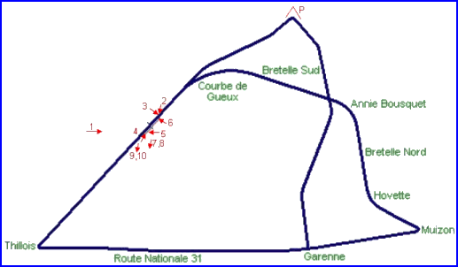
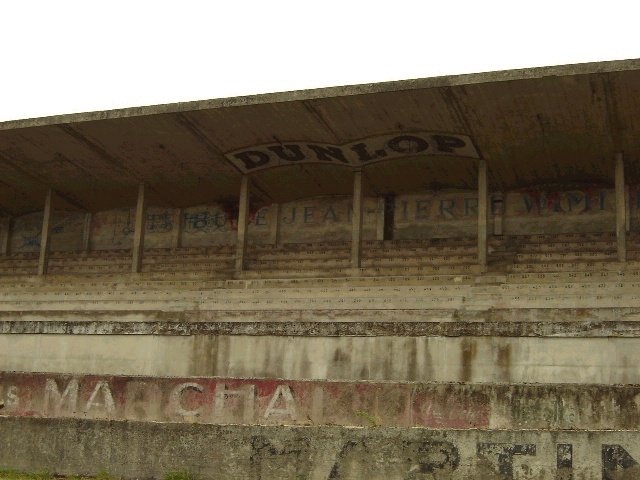
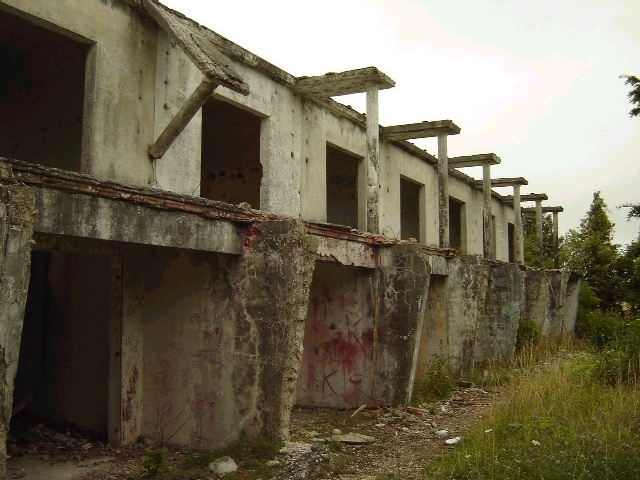
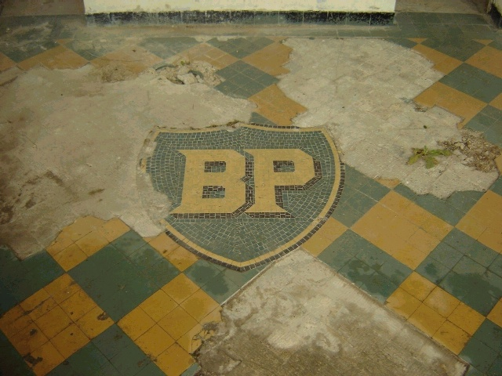
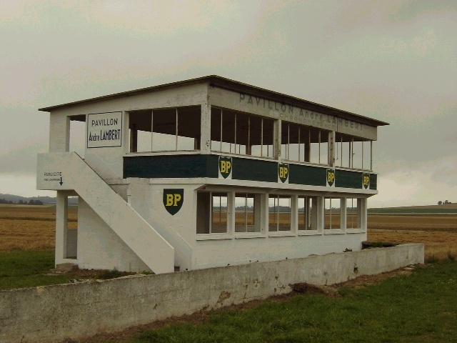
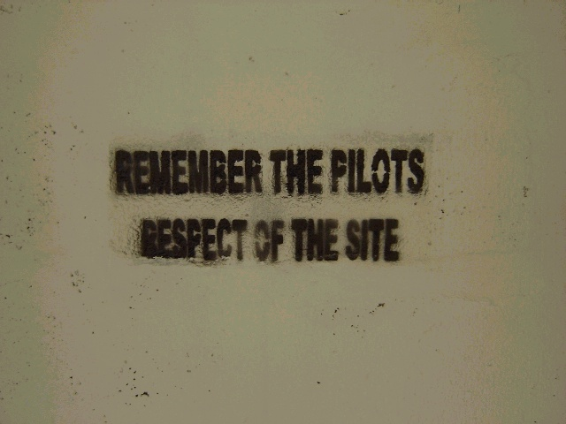
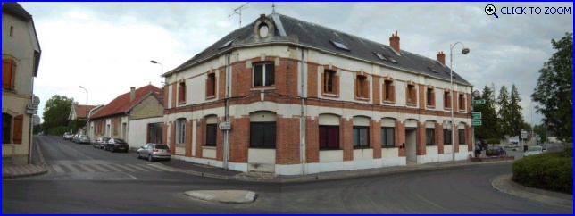

| Related Information | ||
| Photographs of Reims by Andy Elvin, early 1990's | ||
| Photographs of Reims by Luc Ghys, August 1994 | ||
| Photographs of Reims by Malcolm Mitchell, 1997 | ||
| Amis du Circuit de Gueux | ||
| Reims, France (Page 2 of 2) |
Photographs Taken: 26th July, 2004

Numbers and arrows indicate the location and direction in which the
photographs were taken.

6. Detail from the grandstand.

7. The Pitboxes behind the pitlane, in very bad condition.

8. The BP-logo in mosaic.

9. At the begining of the pitlane, the 'Pavillon Andre Lambert'. This building has been restored as part
of the ongoing project by the Amis du
Circuit de Gueux.
This Photo by Luc Ghys shows
the condition of the building prior to the renovations

10. Inside the pavillon.

P. In the village of Gueux, at 'Virage de Gueux'.
Return to racingcircuits.net's Photo Archive Main Index
| Related Information | ||
| Photographs of Reims by Andy Elvin, early 1990's | ||
| Photographs of Reims by Luc Ghys, August 1994 | ||
| Photographs of Reims by Malcolm Mitchell, 1997 | ||
| Amis du Circuit de Gueux | ||
Photographs ©Roelard Smit. Reproduced here with kind permission.